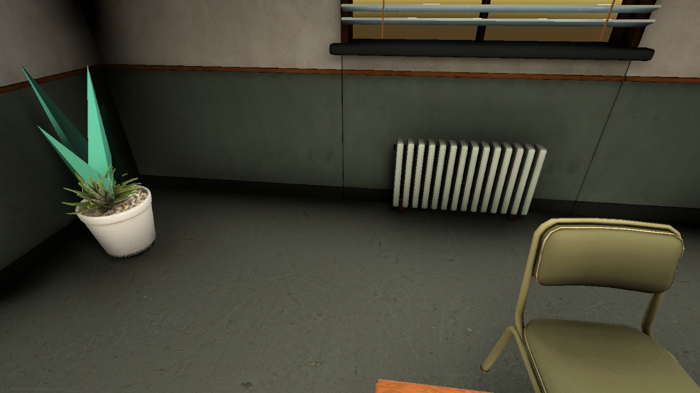
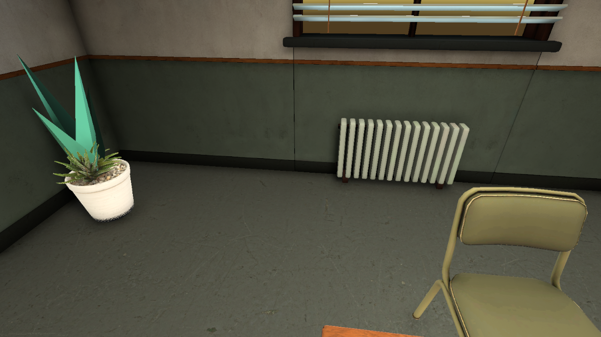

Station graphics polish
Fresh screenshots after the lighting and reflection bake. The main changes are reduced corner AO, scanned plants and carpet, more detailed props, and clearer HUD controls.
Checks and limitations · Research and AO comparisons
Same-angle AO comparison
These diagnostic images precede final plant cleanup and baking. Geometry was held unchanged between the original and revised AO captures.
Original AO

Revised AO
